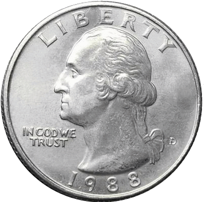

| Roll | 1 | 2 | 3 | 4 | 5 | 6 |
|---|---|---|---|---|---|---|
| 1 | 2 | 3 | 4 | 5 | 6 | 7 |
| 2 | 3 | 4 | 5 | 6 | 7 | 8 |
| 3 | 4 | 5 | 6 | 7 | 8 | 9 |
| 4 | 5 | 6 | 7 | 8 | 9 | 10 |
| 5 | 6 | 7 | 8 | 9 | 10 | 11 |
| 6 | 7 | 8 | 9 | 10 | 11 | 12 |
7|PROBABILITY

Example: coin flip
- E.g. Flipping a coin
- Numerator: number of those outcomes
- Denominator: all possible outcomes

\(p(heads) = 1/2 = .5\)

\(p(tails) = 1/2 = .5%\)
Sampling marbles

- Jar of marbles
- Contains 25 white & 25 blue marbles
- What is the probability of randomly drawing a white marble?
- Number of those outcomes (25)
- Divided by total number of outcomes (50)
\(p(white) = 25/50 = .5\)
Probability and z-scores
- Normal distribution
- Symmetrical
- Highest frequency in the middle
- Tapers off towards the extremes
- Very common distribution shape
- Defined by an equation
- Can be described by the proportions of area contained in each section

\(Y = \dfrac{1}{\sqrt{2 \pi \sigma^2}}e^{-(X-\mu)^2 / 2\sigma^2}\)
Spiderman
- Are Peter Parker’s RTs “noticeably different?”
- \(z = -2.5\)
- Can state precise probability of observing a \(z\)-score that (or more) extreme


Warning
- Probabilities given in the Unit Normal Table will be accurate only for normally distributed scores
- Shape of the distribution must be verified
- Important assumption of Central Limit Theorem